Я такой же как все, а значит, если я помыл машину, то… В общем с утра 18 июля в Ижевске было хмуро.
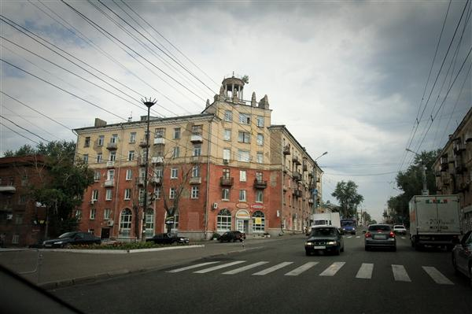
Решили съездить на набережную Ижевского пруда.
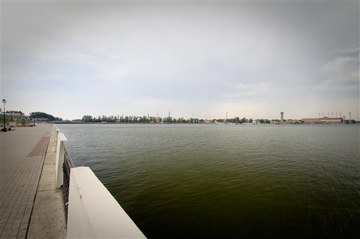
Сам пруд был запружен на реке Иж аж в 1760 году, довольно большой, наверняка по выходным по набережной гуляет много народа, но в будний день мы были там чуть ли не одни. В такие моменты мне всегда казалось, что мы проехали под «кирпич».
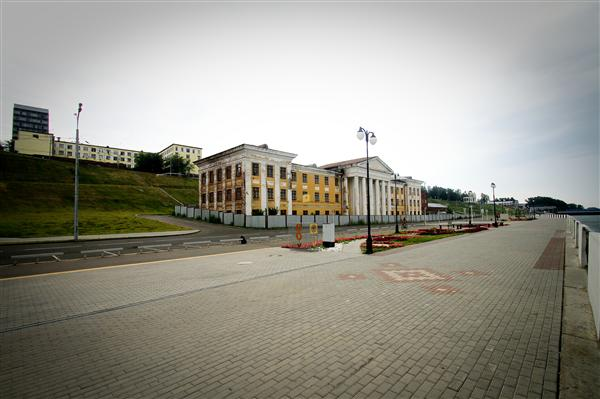
Вдоль набережной идёт широкая велосипедная дорожка. С нетерпением жду, когда дорожную перед нанесением дорожной разметки дорожники будут руководствоваться не старыми трафаретами, а здравым смыслом. Ежу же понятно, что надписи и знаки, вроде ШКОЛА, ДЕТИ или велосипедная дорожка должны рисоваться с искажением, в перспективе. Чтобы велосипедист или даже автомобилист сидя во время движения к надписи под весьма острым углом выдели не пятно краски и задуманный знак.
В Ижевске (и большинстве городов) до этого уже почти дошли. Вытянутые знаки уже встречаются, а вот перспективы пока нет.
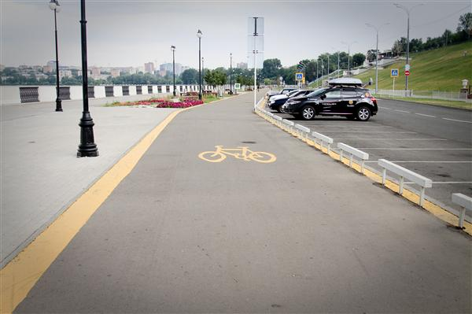
Пофотав набережную поехали в сторону музея стрелкового оружия им. Калашникова.
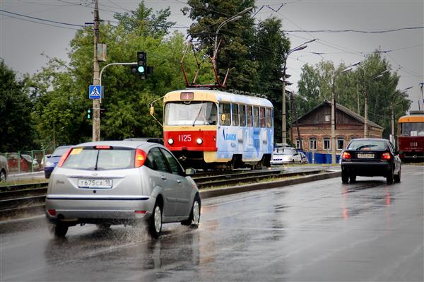
Рядом с музеем, кстати, располагается красивый Свято-Михайловский собор.
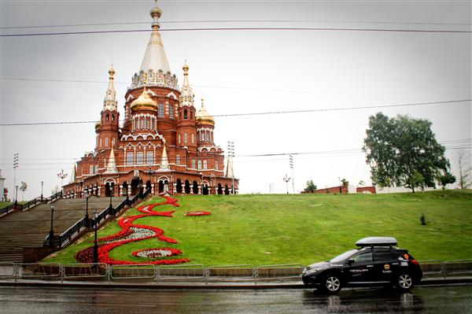
В музее Калашникова с утра в будний день уже было довольно много народа. Люди разные. Один, с виду обычный мужчина, интересовался как часто Михаил Тимофеевич (Калашников) бывает в музее. Михаилу Тимофеевичу, к слову 92 года, и любому здравомыслящему человеку понятно, что музей имени его его интересует в меньшей степени. Сотрудница не сразу даже нашлась что ответить. Но мужчина настойчиво просил записать его на встречу. (Может автомат придумал?)
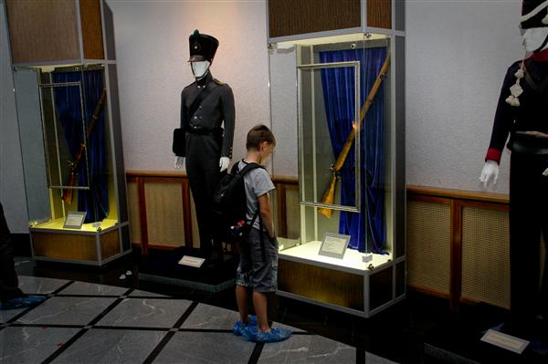
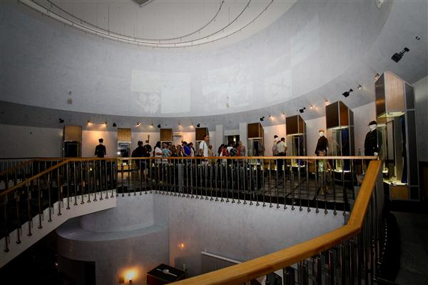
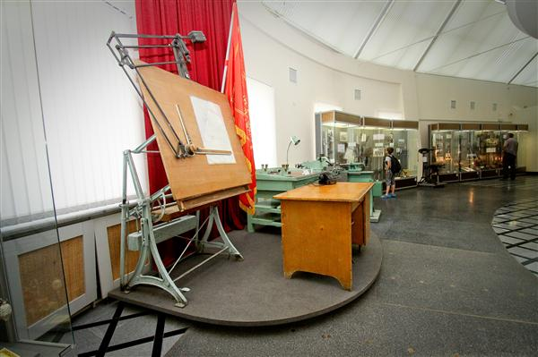
АК-47 — оружие известное любому мальчику с пелёнок. С нами был один знакомый мальчик, который был рад научиться разбирать-собирать автомат Калашникова самостоятельно. К слову стоит эту услуга в музее то ли 10, то ли 20 рублей. В отличие от «Права Фотосъемки» за 200.
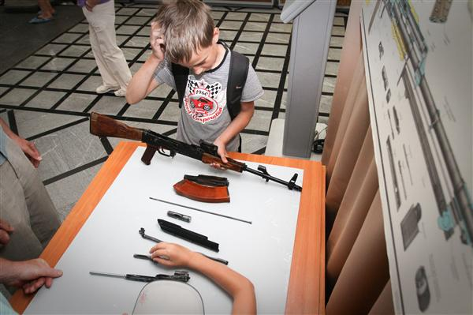
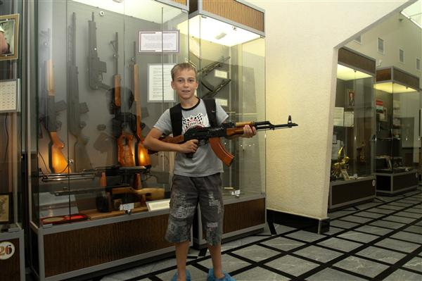
После музея мы выдвинулись в сторону Казани.
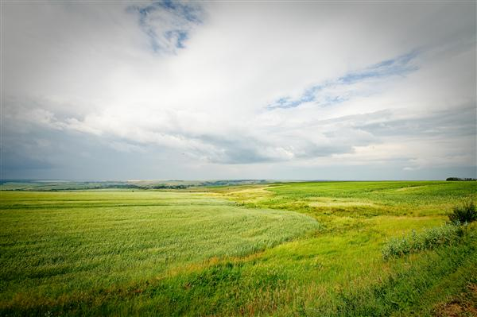
В Казань приехали в самый разгар окончания татарского рабочего дня (совпадает с русским), а значит начали осмотр, стоя в пробках. Попутно я на телефоне искал гостиницу. Нашлась в самом центре.
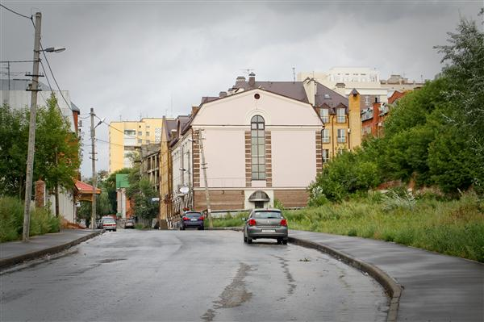
Гостиница «А+» довольно старая, правда с двухкомнатным номером, правда за 3000 рублей.
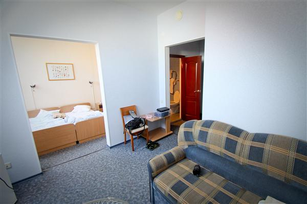
Пока другие участники экспедиции разбирали вещи, я поинтересовался у администратора гостиницы, простой татарской женщины, как в Татарстане относятся к Шаймиеву, предполагая, что она как и большинство русских будет ругать власть. Администратор сказала, что Шаймиева в Татарстане очень уважают и называют бабай — дедушка. Он, дескать, придя к власти, первым делом разобрался с националистами, завоевав, таким образом, у жителей Татарстана, где чуть ли не большинство браков смешанные крепкий авторитет.
Разобрав вещи, пошли в расположенный неподалёку, на площади Тукая, торговый центр «Кольцо». Фуд-корт в Казани называют обжорный ряд. Купили на обжорном ряду на ужин пахлаву. В подарок к пахлаве мужчина в джинсах, рубахе и часах дал ещё какую-то штуку со сложным названием.
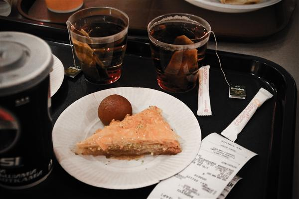
Вот ведь ещё что интересно. Мне сложно вспомнить, чтобы русский продавец давал что-то когда-то в подарок. Наш маркетинг выдаёт только что-то вроде «шампанское покупателю шубы» и, что вызывает особенный стыд, активно рекламирует эту Фишку. У продавцов некоторых других национальностей на этот счёт нет комплексов, дарят от души.
Выводы — в Казани интересно, гостиницу лучше искать заранее. Телефон гостиницы «А+» — (843) 264-51-07, 236-00-99, но лучше поискать дешевле, новее.